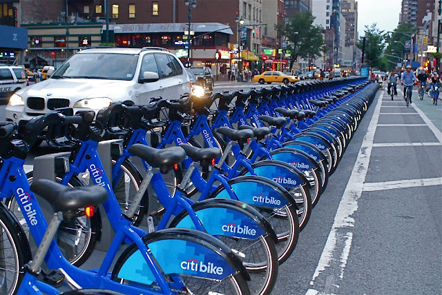
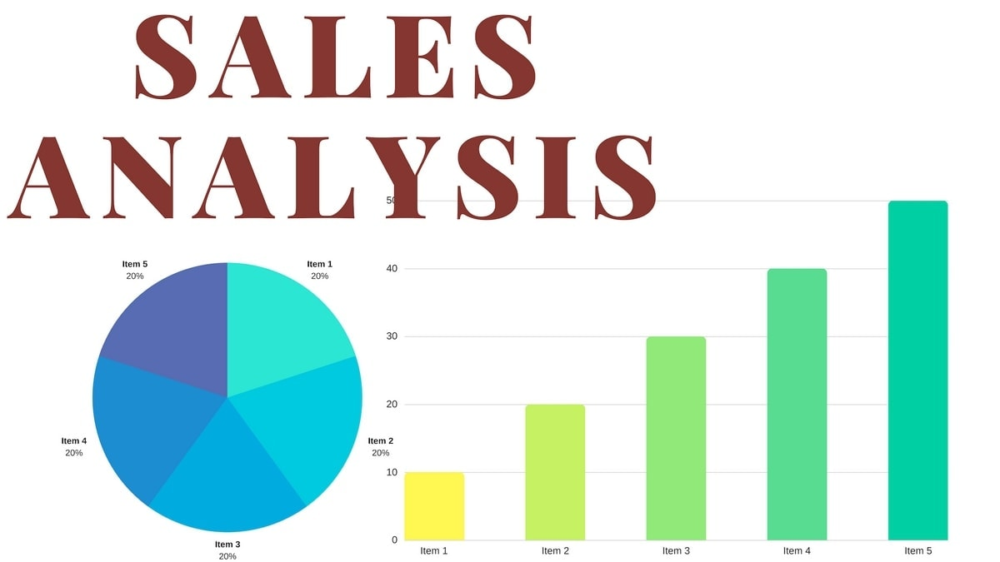

In this project, I have figured out what features are best for predicting
the price of
the diamonds in the dataset. The main focus was on the four Cs of diamonds: carat (weight), cut
grade, color grade, and clarity grade.

In this project, I carried out exploratory analysis through visualization on when most trips were
taken in terms of time of day, day of the week in Ford Go-Bike System covering the greater San
Francisco Bay Area

I use Python Pandas & Python Matplotlib to analyze and answer business questions about 12 months
worth of sales data. The data contains hundreds of thousands of electronics store purchases
broken down by month, product type, cost, purchase address, etc.I start by cleaning the data. I
moved to data exploration section. In this section I explore 5 high level business questions
related to our data: What was the best month for sales? How much was earned that month?, What
city sold the most product?, What time should we display advertisemens to maximize the
likelihood of customer's buying product?, What products are most often sold together?, What
product sold the most? Why do you think it sold the most?

In this project, I wrangled WeRateDogs Twitter data archive. I have created an interesting and
trustworthy analyses and visualizations. I was able to find out top 10 Dogs with highest
favourite count, Dog stage with highest favourite count and retweet count and finally, Year with
the highest favorite count and the Dog who had the win.

Here is IMDB Movie Data analysis project. where I performed data analysis proceses and provided
answers to the following 3 questions. What is the most popular genre from year to year?,
director with highest movie popularity and year of production and finally, movie and production
company that has the highest revenue and the corresponding year.

Exploatory Data Analysis was performed using python to analyse datasets obtained from solar power
plants. I analysed the data gathered from solar power plants to find relationships between
different values, Which factor affect solar power generation and use data to figure out need for
rwepair, maintainance and replacement of equipments